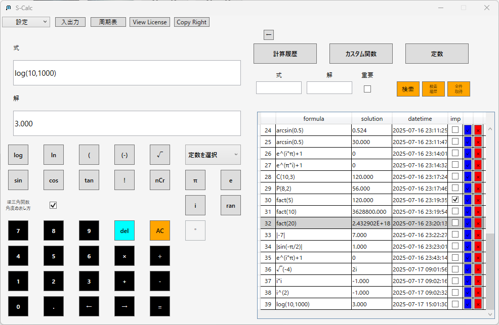
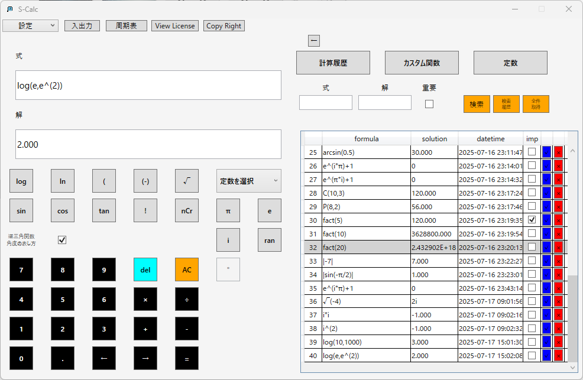
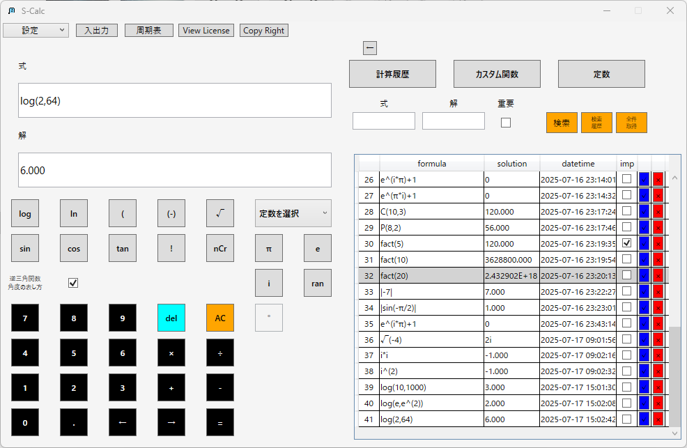
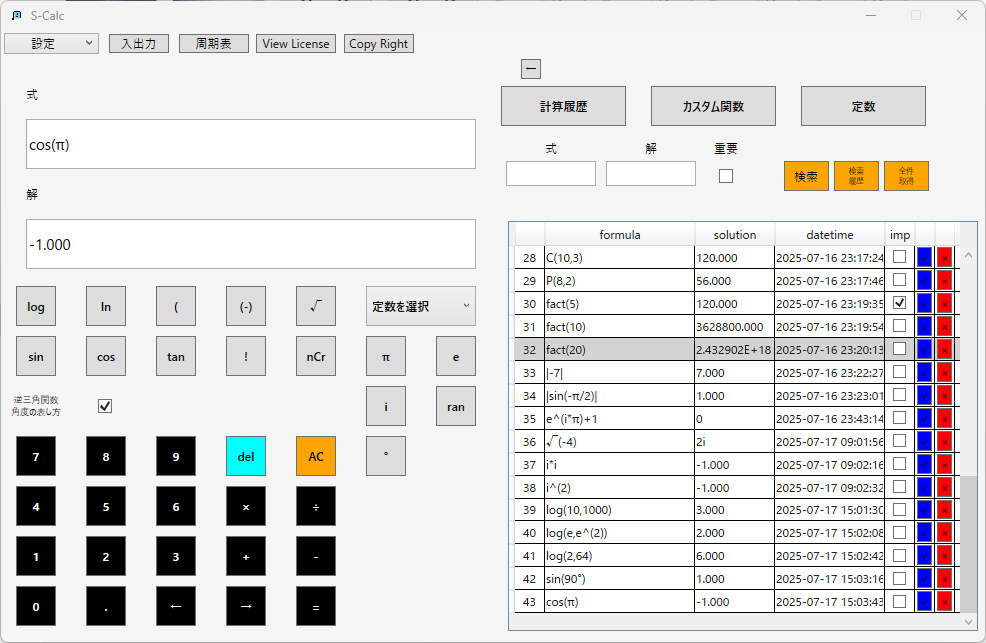
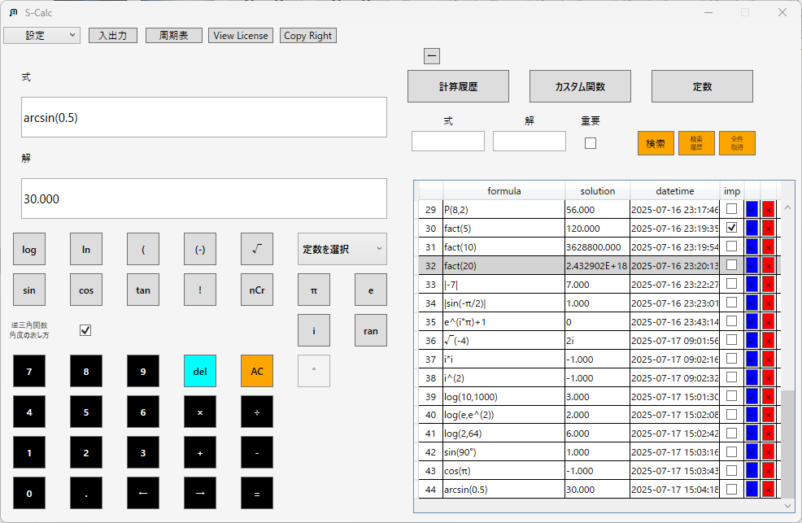
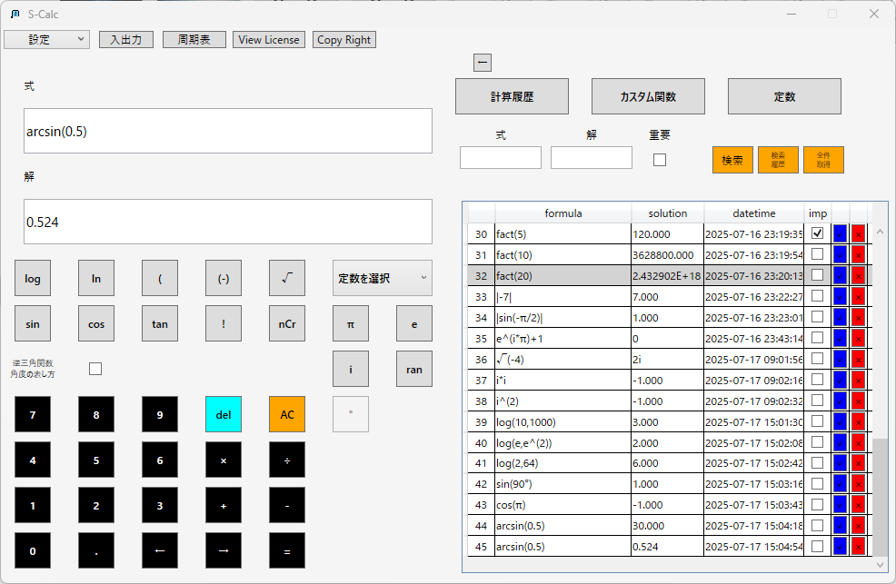
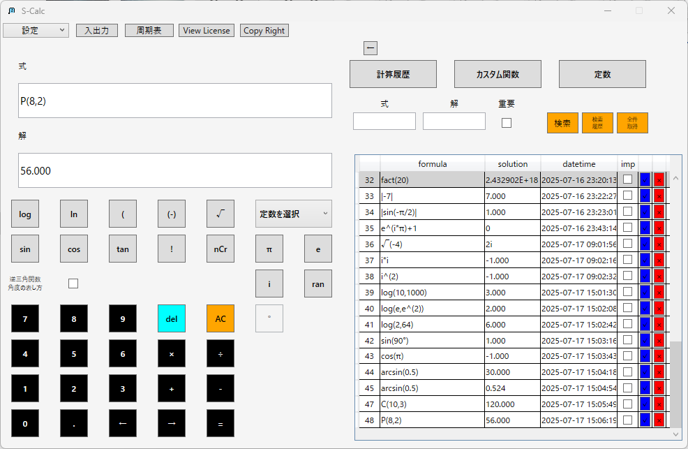
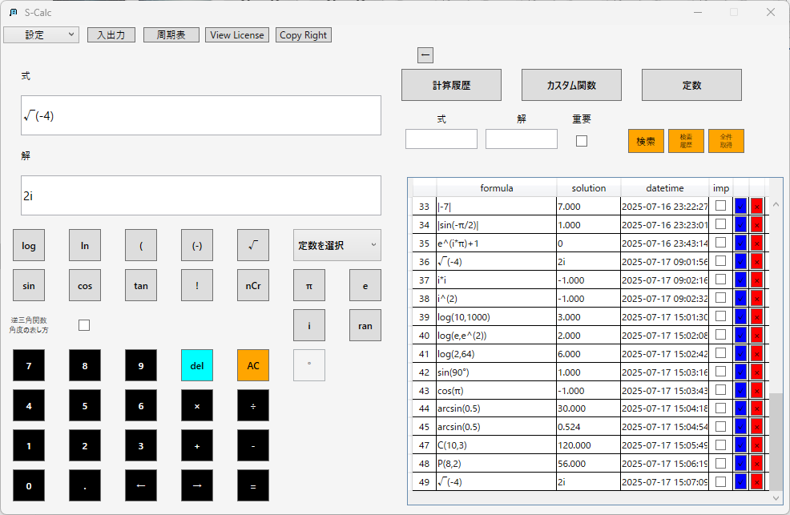
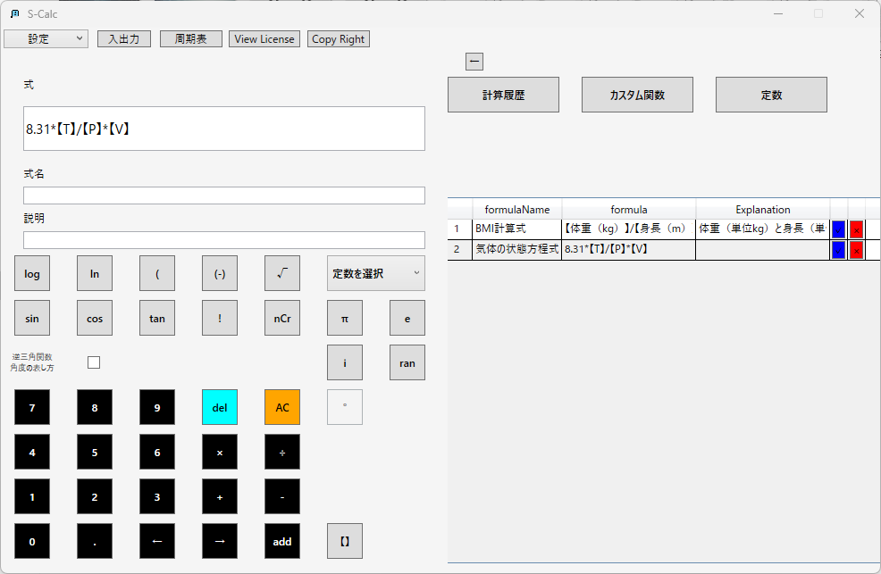
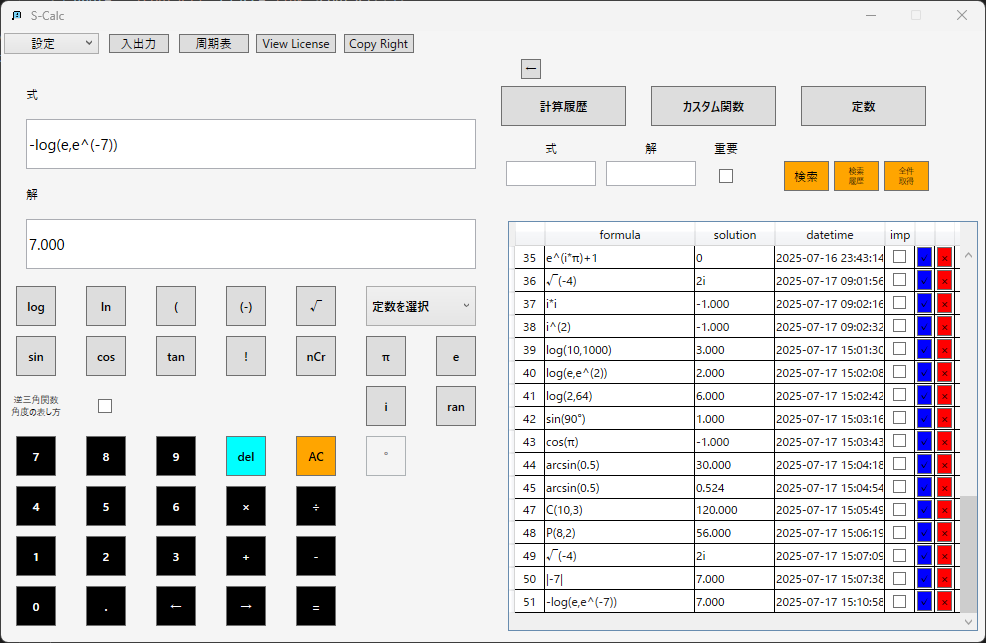

高校・大学でよく使う関数まとめ：関数電卓S-Calc 活用ガイド
はじめに
S-Calcは、Windows向けの高機能関数電卓です。高校・大学でよく使われる数式や関数にも対応しており、学習・演習・検算の補助ツールとして幅広く活用いただけます。
本ページでは、高校・大学の授業や自主学習で頻出する計算を中心に、S-Calcの機能と使用例をご紹介します。
よく使う関数と使用例
1.指数・対数（数学Ⅱ・理科・情報）
・常用対数（log10）
・自然対数（ln）

・任意底の対数

S-Calcでは、log(a,b)形式で任意の底による対数計算が可能です。
2.三角関数・逆三角関数（数学Ⅱ・物理）
・度数法による計算・弧度法による計算

・逆三角関数による度数法と弧度法の解の算出


角度の単位（度数法・弧度法）は切り替え可能。
逆三角関数も表示形式を選べます。
3.順列・組み合わせ（数学A・統計）
・順列
・組み合わせ
簡単なボタン操作で順列・組み合わせの計算が可能です。
4.平方根・虚数・絶対値（数学Ⅰ・数学C）
・虚数単位を含む演算
・絶対値
負の平方根も正しく処理でき、虚数iに対応しています。
5.実験系の計算（理科・大学一般教養）
・理想気体の法則：PV=nRTの式をカスタム関数で登録可
・pH計算

定数登録・カスタム関数で、演習時の計算も再利用できます。
S-Calcの教育向け特徴
・式をそのまま入力できる分かりやすい設計・履歴自動保存で振り返り・再計算が簡単
・定数・関数のカスタマイズで学習にフィット
・日本語・英語対応で理系学生・留学生にも
ダウンロード・製品情報
| 製品名 | 特長 | リンク |
|---|---|---|
| S-Calc Full | すべての機能を搭載 | Microsoft Storeで開く |
| S-Calc Lite | 周期表機能を省いた軽量版 | Microsoft Storeで開く |
| S-Calc PeriodicViewer | 周期表機能のみを独立提供 | Microsoft Storeで開く |
教育機関・教員の皆さまへ
教材への導入・機能詳細のご相談などお気軽にご連絡ください。▶お問い合わせフォームへ
NewsページにnoteやQiitaに投稿している記事へのリンクを掲載しておりますので、
ご興味のある方はご覧になってください。
▶Newsページへ